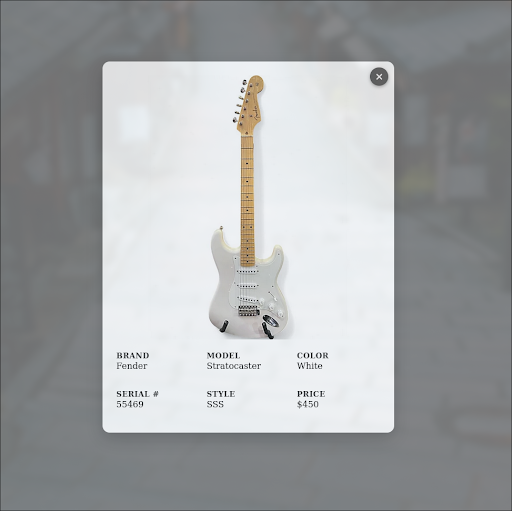
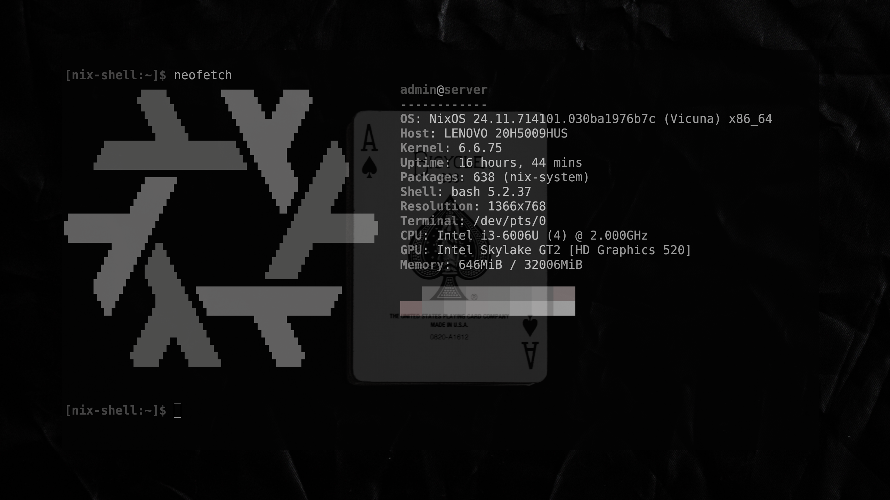
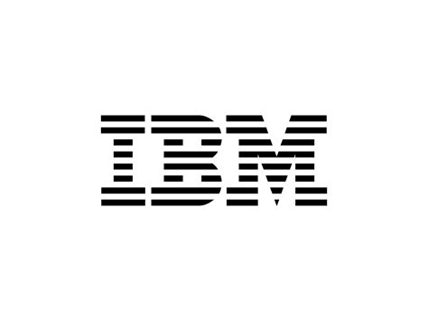

CMS
A lightweight CMS for my instrument business, built to track stock, sales, and trades with speed and simplicity.
I’m Riley Boughner — a Computer Science student with hands-on experience in IT, full-stack development, and software engineering. My passion lies in creating smooth developer workflows, robust infrastructure, and setting the stage for a career in DevOps.

Hey! I’m Riley. I’ve been a drummer for over 15 years and recently started learning guitar. Music has been a big part of my life, and I even run a small business buying and selling instruments.
I’m also big on spending time outdoors. Whether it’s camping, boating, or kayaking, I like getting away from the screen and making the most of good weather.

A lightweight CMS for my instrument business, built to track stock, sales, and trades with speed and simplicity.

A curated set of Linux configuration files and automation scripts for managing shell environments, developer tools, and system settings. Designed for portability and quick setup across multiple machines.

Turns an old computer into a smart mirror with time, weather, calendar, and news — all built in Python with modular widgets.

Infrastructure-as-Code blueprints for my homelab, fully automated with NixOS. Manages app deployments, secrets, and system configuration consistently across machines.

My personal developer portfolio site, designed to showcase projects, skills, and experience. Built with a responsive layout and dark mode for a clean, modern presentation.

IBM Cloud Foundations — Verified knowledge of cloud basics, IBM Cloud services, and core deployment/security concepts.
IBM Introduction to DevOps — Fundamentals of DevOps practices, CI/CD, infrastructure as code, and collaboration between development and operations.
IBM Getting Started with Git and GitHub — Covers version control fundamentals, Git concepts, and collaborative workflows. Includes creating repositories, branching, pull requests, and merging, as well as building and sharing open-source projects on GitHub.
Introduction to Software Engineering — Overview of software development principles, methodologies, and the software lifecycle. Covers requirements gathering, design, development, testing, deployment, and maintenance, along with best practices for building reliable and maintainable software.
IBM Introduction to Containers — Fundamentals of container technology, including how containers work, their benefits, and use cases. Covers creating, running, and managing containers with Docker and Kubernetes basics.
IBM Introduction to Agile Development and Scrum — Covers Agile principles, Scrum roles, events, and artifacts. Includes writing user stories, estimating story points, using kanban boards, creating product backlogs, and applying Agile practices like small batches, MVPs, and test-driven development.
IBM Hands-on Introduction to Linux Commands and Shell Scripting — Covers Linux architecture, distributions, and package management. Includes using Bash commands for file, networking, and system operations, writing shell scripts with environment variables, and automating tasks with cron jobs.
IBM Developing AI Applications with Python and Flask — Covers the full lifecycle of creating Python applications, from building and testing modules to packaging and deployment. Includes developing web apps with Flask, integrating AI capabilities using IBM Watson AI libraries, and implementing best practices for routing, error handling, and CRUD operations.
IBM Introduction to Agile Development and Scrum — Overview of Agile principles and Scrum framework, including roles, events, and artifacts. Covers creating and refining product backlogs, writing user stories, estimating story points, and tracking progress with kanban boards and burndown charts.
IBM Python for Data Science, AI & Development — Covers Python programming fundamentals, including syntax, data types, functions, and object-oriented concepts. Includes hands-on work with Pandas, NumPy, and Jupyter Notebooks, plus working with REST APIs and performing web scraping.
AWS Certified Cloud Practitioner — Demonstrates knowledge of AWS Cloud fundamentals, including core services, cloud concepts, security, architecture, pricing, and support. Validates the ability to understand AWS use cases and basic deployment principles.
Computer Science student (May 2027 graduate) with 1 year of professional software development experience and several years in IT. Skilled in full-stack web applications, database optimization, and secure coding practices. Available for Spring & Summer 2026 co-op.
University of Cincinnati — B.S. Computer Science, Graduating May 2027 (GPA: 3.18)
Relevant Coursework: Data Structures, Algorithms, Operating Systems, Database Management, Software Engineering
Languages: C/C++, Python, PHP, TypeScript, Java, HTML, CSS, JavaScript, SQL
Frameworks/Libraries: React, Flask, Pandas, Node.js
Tools & Technologies: Git, Docker, Linux, Containers, Virtualization, Databases, CI/CD, REST APIs, Agile Development
Certificates: IBM Introduction to Cloud Computing • IBM Introduction to DevOps • IBM Introduction to Git • IBM Introduction to Software Engineering • IBM Introduction to Containers • IBM Introduction to Agile Development • IBM Introduction to Linux & Scripting • IBM Developing AI Applications with Python and Flask • IBM Application Security for Developers and DevOps Professionals • Python for Data Science, AI & Development • AWS Cloud Practitioner (In Progress)
Open to Spring 2026 internships/co-ops (remote, hybrid, or on-site). US work-authorized.